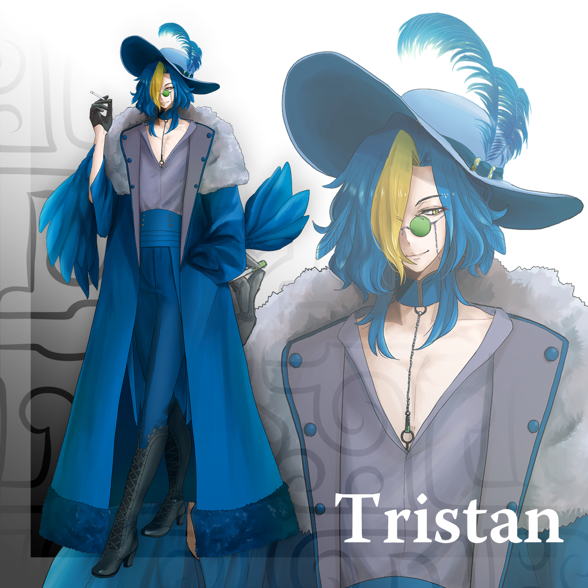
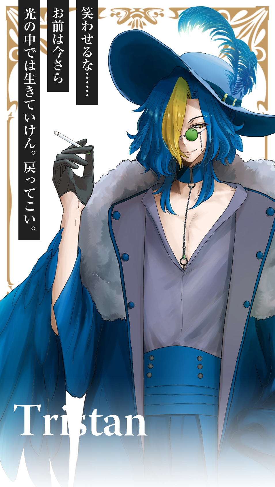
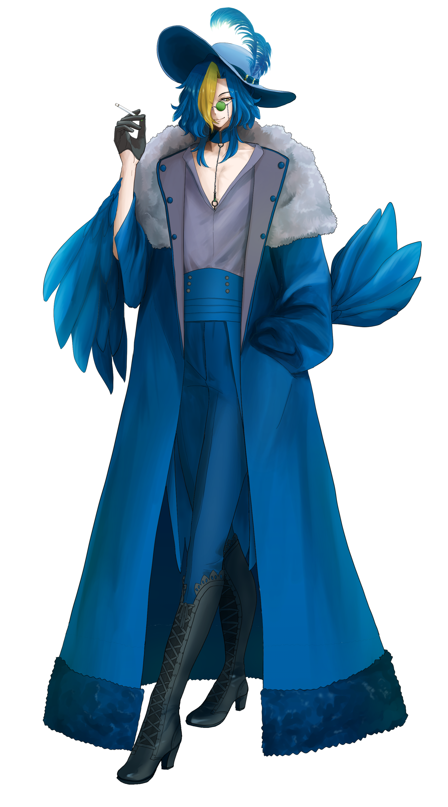
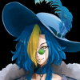

| 名前 | トリスタン |
|---|---|
| 原型 / 性別 | ウlッlウ♂ |
| 種族 | テラン |
| 所属 | 市民 |
| 身長/年齢 | 200cm/年齢不詳 |
| 居住地 | 陸の国【カタルチア】 |
| 一人称 / 二人称 | 俺 / お前、呼び捨て、苗字＋さん(表の顔) |
| 参考台詞 |
「この鍵と首輪が俺とお前を繋いでくれた……！」 「笑わせるな……お前は今さら光の中では生きていけん。戻ってこい。」 「なんだその目は……自分の立場を分かっているのか？いいだろう、可愛がってやる。」 |
